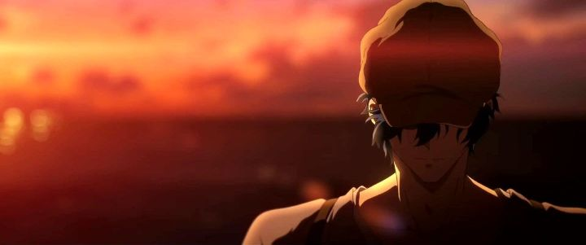

Disclaimer: This review covers the 2020 film "Violet Evergarden - The Movie," also referred to as "Violet Evergarden Film 2" (released after the prior feature-length film "Eternity and the Auto Memory Doll"), or simply "Violet Evergarden" as displayed in-film credits.Disclaimer: Spoilers for this movie and the original series "Violet Evergarden."Kyoto Animation's feature length 2020 film "Violet Evergarden - The Movie" is significant for a number of reasons. For one, it acts as a direct sequel and conclusion to the original series "Violet Evergarden" (with a definite enough conclusion that I don't expect any further stories or seasons). It was also the first project fully developed and released after the horrific 2019 arson attack on Kyoto Animation's main studio, one of the worst attacks of violence Japan had seen in over half a century (the previous "Evergarden" film released a few months after, but it was assumed to largely already be complete by that time). For these reasons alone, supporting "The Movie" seemed of the utmost importance, and is undoubtably an emotional experience, much more so than it already was due to the thematic nature of "Violet Evergarden."There's also a thing in 2020 called COVID-19 that through the entire world into a pandemic and economic lockdown. Millions of people died over the course of two years, most of them much sooner than expected. Beloved local shops faced extinction sooner than expected. Even the movie theater industry faced near death in North America. Like the original series, "Violet Evergarden - The Movie" is primarily about emotion and the power of words, and focuses heavily this time on saying things outloud while you can, before you die, or before your loved one does. Again, the themes ring especially true due to recent circumstances.I have no idea if the staff at Kyoto Animation altered the script or direction based on all of these factors. But it does feel like, in the way they always have, that they wanted to share this message of love and peace and forgiveness, and understood the importance of it. Seeing this in a theater in early 2021, in a spaced out room with everyone in masks, I teared up multiple times, and heard sniffles across the seating rows. Yes, it's all calculated, but while my being aware of that allowed me to steel myself for the main series, I couldn't help myself but cry in the power of this movie. In the previous film ("Eternity"), we saw multiple connected storylines over the course of a few years play out, focusing on new side characters. In "The Movie," a couple storylines are weaved together, and the focus is almost entirely on Violet, the soldier-turned-ghost-writer, with mechanical prosthetic arms. Now with a few years of experience, she's gone from a robotic personality unable to fully understand a person's feelings, to a famous writer as a "Memory Doll," able to express things better than anyone. Anyone's feelings but her own, of course. She still misses Major Gilbert, her commander in the war, missing now for several years and long presumed dead. This is while some of the post-office staff have retired and moved on, and the telephone and electricity are becoming common-place: the world is changing, and everyone's aware that letters might become obsolete in the near future. But in fact, it terns out Gilbert may in fact in alive (I think this was strongly hinted at in the end of the main series somewhere, but I can't find evidence of it). He had been living on a far-off island, one arm and eye lost in injury, working as a teacher to the local children and writing letters for them to their own fathers, also lost in war. Simply on a hunch on recognizing his hand-writing, post-office director Hodgins immediately tells Dietfried, Gilbert's cold older brother and active army captain, as can't help but tell Violet the news as well. With renewed hope and desparation, they take a journey out to the island to finally see him. ... but does Gilbert want to see Violet? Why hasn't he returned back to his home country? It turns out Gilbert is stricken with regret for his role in the war. He regrets putting Violet, barely a teenager at the time, through such violence, resulting in him witnessing her lose her two arms. He regrets all the death, best seen in the island's small village, where all the adult men had fought and died, leaving behind only the elderly, women and children, all missing them terribly but doing their best to move on. By starting a new life there, Gilbert might be able to take the place of the men that were lost, as a mentor and worker, while hiding that he originally fought for the other side. It might not be enough, but it's all he can offer to atone. And Violet would have been better off never having met him, and will be better off now without him. Of course, seeing Gilbert's cruel and stubborn stance on the matter when Violet is finally there, you can't help but want to punch him in the face. Unbeknownst to him, Violet never had someone that cared for her before Gilbert. Her life was meaningful because of him. And more than anything, she wants to be with him, finally understanding the meaning of "I love you" and wanting to say it to him. Or at the very least, to see his face one more time. And at first, Gilbert denies her even that, thinking it will make a difficult decision a little easier for both of them. This is the core story, but not the only one. Before the discovery of Gilbert, Violet agrees to take a job for a young boy in a hospital. Perhaps 10 years old, he appears cruel to his family in dismissing them so harshly, but wants to write a letter to his mother, father and little brother (perhaps only 3 years old), and even to a fourth person (a childhood friend), to be received after his evitable death in the months to come. Despite not having much money to offer, Violet agrees to the job. The job is almost finished, but in the middle of Violet's journey to the island (without planes, it takes days to get there), the boy takes a turn for the worse, about to die without the final letter being written. It makes for an exciting, dramatic and incredibly sad climax, as Violet is conflicted with her finally finding Gilbert and how it affected her promise and duty to the boy. This is all bookended with the perspective of a modern(ish)-day character, a young woman attending the funeral of her grandmother, a character from the main series that receives letters ghost-written by Violet. She goes on a personal adventure of self-discovery, wanting to learn more about this mysterious writer and the power of her words, a decent way to give us a hint of what becomes of all the characters. In fact, several past episodes get referenced in this movie, perhaps making it difficult for newcomers to watch on its own (not unlike "Disappearance of Haruhi Suzumiya," a powerful improvement on the main series that still required watching the entirety of the series first). And we get the clear message that it isn't the letters themselves that matter, but simply the words and saying them to those you hold dear. Even with telephones and telegrams that make communication instant, it's every bit as important to actually USE them, to say what you want to say, while you still can. If there is one frustration I have with the movie, it's the role of Hodgins and Dietfried. In the main series, there was never really any sense that they were a possible love interest to Violet: Hodgins was a father figure in place of Gilbert, and Dietfried hated Violet but found some connection and respect through their mutual loss. In "The Movie," there's more of a subtle love-triangle. Even though Violet clearly ownly longs for Gilbert, Hodgins seems to have stronger emotions for her now, and even Dietfried too (the two even clash over their intentions towards her). The whole drama of "who the main girl will end up with" is fun in shows like "Downton Abbey," but "Violet Evergarden" was never really about that sort of thing. It was about loss more than just love. It's a slight tonal change much like "Eternity" had, and even though it's less jarring, it's still a little out of place.And of course, it leads to a satisfying conclusion, for they couldn't give you a 2+ hour finale without a happy ending, could they? Ultimately, the emotional payoff in "The Movie" is huge, and is the biggest reason why it succeeds. It very much is a romance movie rather than just a series of emotions (and arguably no story or plot). If you had already watched "Violet Evergarden" as a series, watching the movie is a must to complete it all. Visually, the movie looks on par with the rest of the franchise, again presented in an ultra-wide aspect ratio. Which is to say, it looks great, but not surprisingly so. The music is mostly the same, albiet with a powerful ending theme in the credits to add to it. My theater screening had Japanese with subs, and was powerful in those key dramatic moments, so I suspect the English dub will also have a chance to shine here (I'll update my review if it turns out better than expected based on the main series). I'm still a little lukewarm on "Violet Evergarden" as a franchise. I love the setting, and the romantization of the typewriter and letters, and the idea of heartfelt short stories, but the whole thing always felt a little too manufactured in the sole purpose of making the viewer cry. But with "Violet Evergarden - The Movie," we get a strong and emotional conclusion that feels earned, even if it's drawn out a little too much. With this movie, I'll give in and cry. And maybe call my parents and tell them I love them. And when it's safe again, give them a hug.
- "Ani" More reviews can be found at : https://2danicritic.github.io/ Previous review: review_Violet_Evergarden_-_Eternity_and_the_Auto_Memory_Doll Next review: review_Voices_of_a_Distant_Star